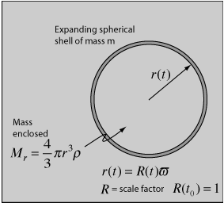

Newtonian Model of Expanding Universe
It is now an experimental fact that the universe is expanding, and expanding at very close to a rate that would make the universe "flat" or "critical" so that it will expand forever, asymptotically approaching a rest condition at infinite time. Actually, the current information indicates a small acceleration attributed to dark energy, but it is still close enough to the critical density that it makes sense to make ones first model that of a flat or critical universe. To that end, one can model the expansion in terms of a uniform density of particles which interact only gravitationally to create a framework from which to develop more refined models. Those more refined models are often expressed in the Friedman equation.
|  | A spherical shell of mass m which is expanding can be described in terms of its kinetic energy and gravitational potential energy, where that gravitational potential energy is contributed by the mass Mr enclosed by the sphere. The spherical shell of mass has been given an energy E. |
The mechanical energy can be expressed as follows, using the notation of Carroll and Ostlie:
The term on the right is an expression for the total energy of the shell which has been constructed in a form to be of future usefulness. In that expression, c is the speed of light, m is the mass, k is a constant which will be used to represent the "curvature" of the space system, and ϖ is a coordinate whose value represents the chosen mass shell and will remain constant as a "comoving coordinate" to specify that shell. The radius r(t) can then be expressed in terms of a time-dependent scale factor R(t) which specifies the expansion of the space and this comoving coordinate:
Now making use of the Hubble law, we can express the velocity of the expanding shell as
Since the velocity can also be expressed as
Now these terms may be substituted into the energy expression above such that every term is a multiple of the comoving parameter ϖ which may then be canceled out. This suggests that the resulting equations apply to any shell and constitute a description of the expanding space in terms of the expansion factor R(t) and the Hubble parameter H(t). The expansion equation can be put in the two equivalent forms

| Mass-dominated expansion |
| Mass and radiation in the early universe |
| Radiation-dominated expansion |
References
Carroll & Ostlie
Ch. 29
| HyperPhysics***** Astrophysics | R Nave |